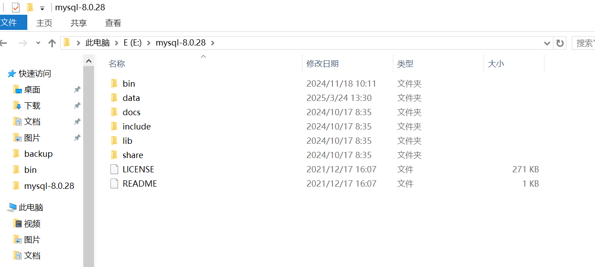
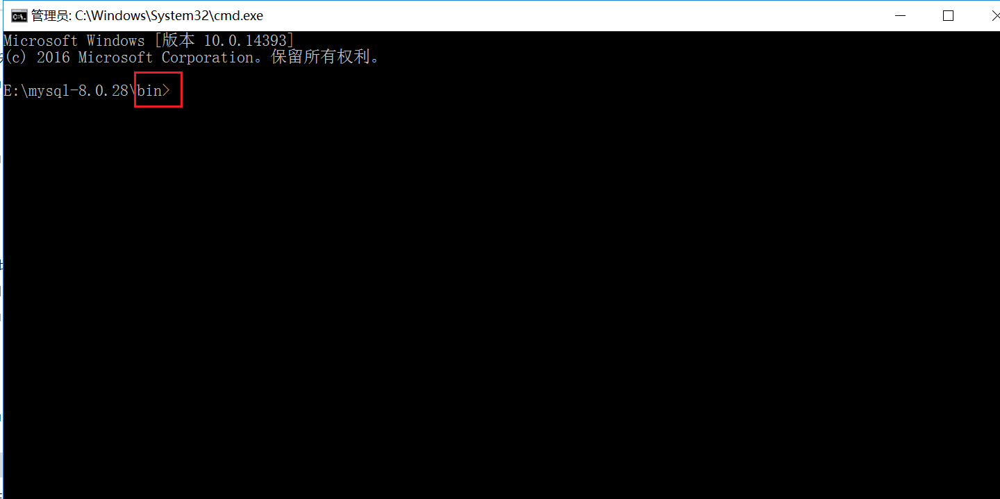
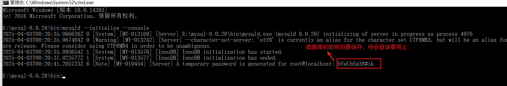

MySQL本地部署
下载MySQL免安装压缩包
下载地址:https://downloads.mysql.com/archives/community/

解压安装
接下来我们解压文件夹，这时我们解压的文件夹是没有my.ini文件和data目录，这时我们需要自己创建my.ini文件,data文件后期回自动生成。

新建配置my.ini文件，并添加配置信息，如下：
1
2
3
4
5
6
7
8
9
10
11
12
13
14
15
16
17
18
19
20
21
22
23
24[Client]
#设置3306端口
port = 3306
[mysqld]
bind-address=0.0.0.0
#设置3306端口
port = 3306
# 设置mysql的安装目录
basedir=E:\mysql-8.0.28
# 设置mysql数据库的数据的存放目录
datadir=E:\mysql-8.0.28\data
# 允许最大连接数
max_connections=200
# 服务端使用的字符集默认为8比特编码的latin1字符集
character-set-server=utf8
# 创建新表时将使用的默认存储引擎
default-storage-engine=INNODB
early-plugin-load=""
skip-grant-tables
[mysql]
# 设置mysql客户端默认字符集
default-character-set=utf8**注意：**下面两个路径改为自己的路径
设置mysql的安装目录:
basedir=E:\mysql-8.0.28#设置mysql数据库的数据的存放目录:
datadir=E:\mysql-8.0.28\data以”管理员身份”运行命令提示符cmd，进入安装解压的mysql的bin目录下:

初始化服务
执行命令保存一下初始密码：
mysqld --initialize --console
**注意：**若之前安装过MySQL，则data文件夹是有文件的。此时输入上述命令会报错，因此需要把data文件夹的内容都删除或直接删除data文件夹。
安装服务
mysqld --install [服务名]
注意:mysqld --remove [服务名]为删除服务

更改密码
先输入
mysql -u root -p然后将刚才保存的密码输入登录进入mysql
1
alter user 'root'@'localhost' identified by 'youpassword';
youpassword是你要修改的密码
扩展
允许外部链接数据库:update user set host ='%' where user ='root' and host = 'localhost';
刷新权限:FLUSH PRIVILEGES;
数据库授权:GRANT ALL PRIVILEGES ON . TO ‘root’@’%’ IDENTIFIED BY ‘123456’ WITH GRANT OPTION;